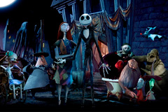
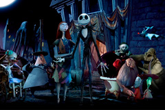
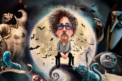

Визуальная вселенная
Спирали, контраст чёрного и белого, «карандашная» фактура. Даже шрифты часто выглядят нарочито «кривыми».
Тим Бёртон (Tim Burton) родился в Бербанке, Калифорния. Учился в Калифорнийском институте искусств, работал в Disney над анимацией, а затем нашёл собственный голос как режиссёр, совмещая графическое мышление с авторским кино.
Спирали, контраст чёрного и белого, «карандашная» фактура. Даже шрифты часто выглядят нарочито «кривыми».
Постоянный соавтор Дэнни Эльфман. Колыбельные мотивы, орган, хор.
Аутсайдер против «нормы», трагикомизм. Ужас здесь — не для пугания, а для сопереживания.
Sweeney Todd (2007), Alice in Wonderland (2010), Dark Shadows (2012). Frankenweenie (2012) — ремейк короткометражки. Big Eyes (2014), Miss Peregrine's... (2016), Dumbo (2019), Beetlejuice Beetlejuice (2024).
3 номинации на Оскар, оскары за грим, постановку, Эмми, золотой глобус.